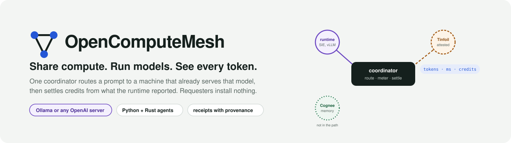
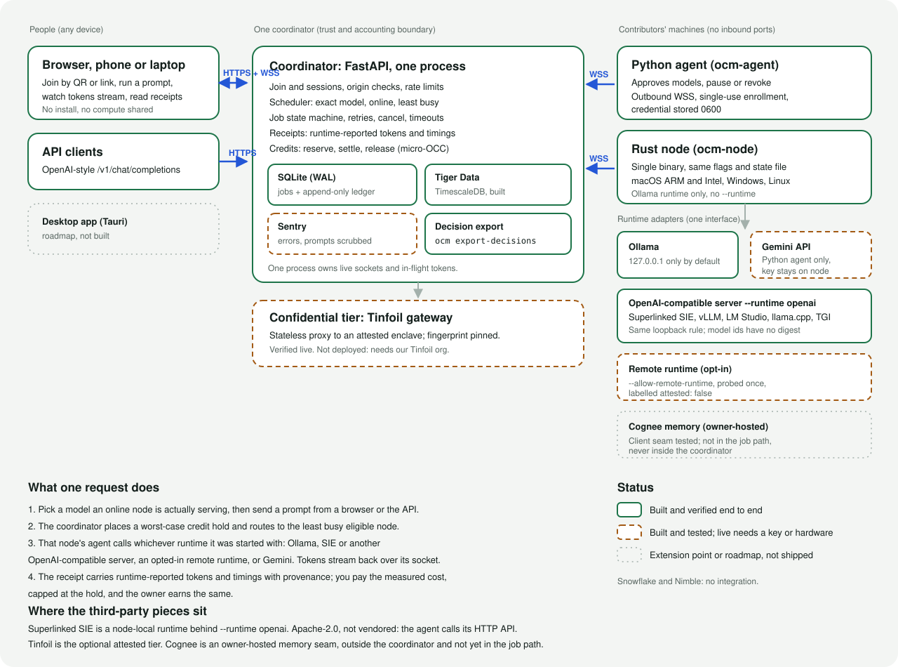

Share compute. Run models. See every token.
One coordinator routes a prompt to a machine that actually serves that model. The tokens stream back with a receipt naming the node, what its runtime reported, and the credits that moved. Requesters install nothing; contributors open no ports.
Install in three steps
1. Host
One machine with Python 3.12+ and uv. The wheel excludes the web app, so fetch both assets.
BASE=https://github.com/roshaninfordham/opencomputemesh/releases/download/v0.1.3
curl -LO $BASE/opencomputemesh-0.1.3-py3-none-any.whl
curl -LO $BASE/opencomputemesh-web-0.1.3.zip
unzip -q opencomputemesh-web-0.1.3.zip -d web/dist
uv tool install ./opencomputemesh-0.1.3-py3-none-any.whl
OCM_WEB_DIST=./web/dist ocm serve2. Share models
Pull a model with Ollama, create an enrollment token under Nodes, run the binary for your OS. It dials out and opens no ports.
BASE=https://github.com/roshaninfordham/opencomputemesh/releases/download/v0.1.3
curl -LO $BASE/ocm-node-0.1.3-macos-apple-silicon
chmod +x ocm-node-0.1.3-macos-apple-silicon
xattr -d com.apple.quarantine ocm-node-0.1.3-macos-apple-silicon
ollama pull qwen2.5:1.5b
./ocm-node-0.1.3-macos-apple-silicon --coordinator https://your-coordinator \
--models qwen2.5:1.5b --name my-laptop3. Join
Open /join/<code> on any device. No install, no account, and joining shares no compute.
Linux uses the musl binary, Windows the .exe. Already running SIE, vLLM or LM Studio? ocm-agent --runtime openai shares it with no Ollama.
What it does
Routes to hardware it does not own
Picks an online node that serves the exact model, least busy first, and streams over that node's outbound socket.
Receipts with provenance
Tokens and timings are reported by the runtime, the coordinator or the browser, and say which. Unreported values stay empty.
A balanced ledger
Charges are capped at the hold agreed before routing, and ocm check-ledger proves every debit has a matching reward.
Honest labels
Only the Tinfoil enclave can be attested. Contributor machines, opt-in remote runtimes and Gemini are labelled for what they are.
How it fits together
